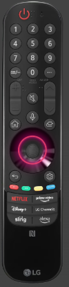

الشاشة بتشتغل لوحدها — TV Turns On By Itself
{{ stepBadge }}
الخاصية دي بتعمل إيه؟
لو الشاشة بتشتغل لوحدها من غير أي عطل ظاهر، غالبًا السبب إعدادات التايمر في الشاشة أو جهاز خارجي متوصل (زي الريسيفر أو البلايستيشن) بيشغّلها. راجع الخطوات دي مع العميل بالترتيب.
⚠ ملاحظات مهمة
١. خاصية Simplink (HDMI-CEC) لازم تتقفل في الشاشة وكمان في الجهاز الخارجي المتوصل بـ HDMI.
٢. مكان زرار الباور في الشاشة بيختلف حسب الموديل (غالبًا تحت نص الشاشة).
٣. لو المشكلة مستمرة بعد كل الخطوات — سجّل طلب صيانة.
اقرأ للعميل
{{ cur.script }}
{{ cur.tvLabel }}

دوس OK أو على الدايرة في الشاشة
{{ doneText }}
لو المشكلة مستمرة: بعد ما تخلّص الـ 5 خطوات والشاشة لسه بتشتغل لوحدها — سجّل طلب صيانة.
المسار حسب إصدار الشاشة (webOS)
{{ amCur.ar }}
{{ amCur.d }}